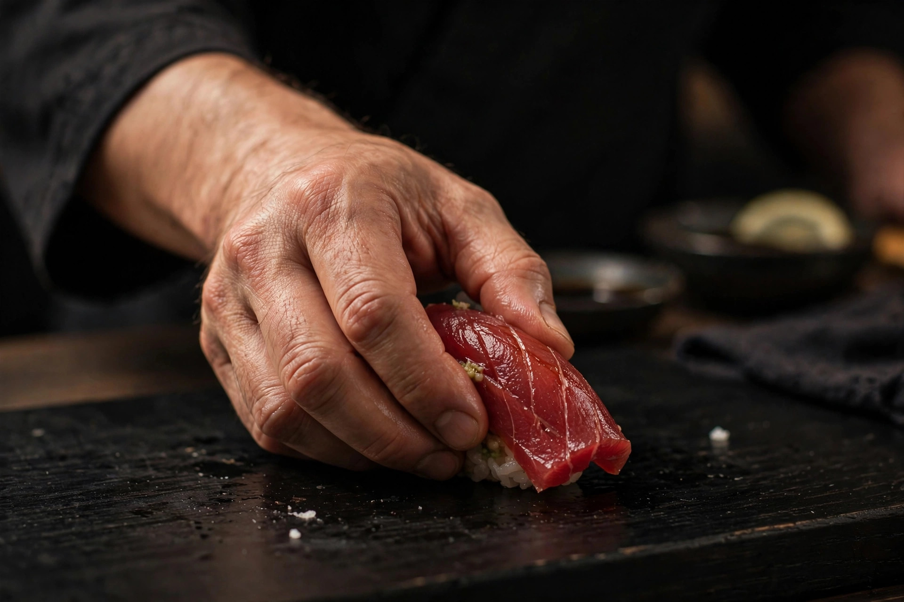
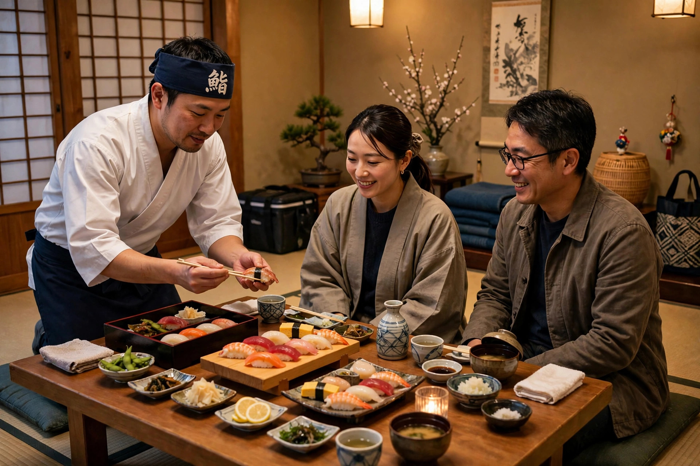
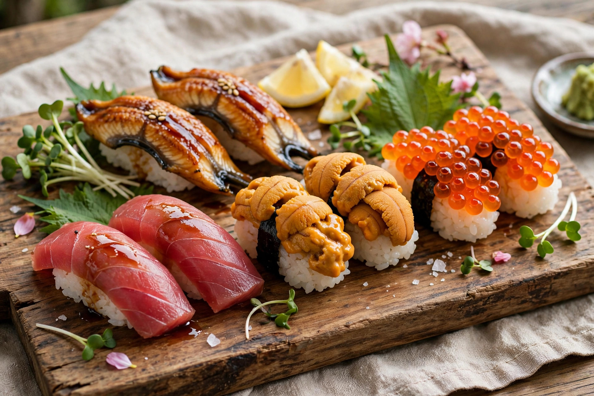

お店で食べる鮨の感動を、そのまま宴席へ
運ばれてくる料理ではなく、店主がその場で一貫ずつ握って提供します。握りたての温度と食感は、出張だからこそ特別な体験になります。
大槌湾をはじめ三陸の海で育った旬の魚介を中心に、その時期一番の素材で献立を組み立てます。
魚ごとに塩・酢・寝かせる時間を使い分ける、店舗と変わらない仕込み。素材の持ち味を引き出してから伺います。
人数・ご予算・会の趣旨に合わせて、貫数や献立を調整します。慶事・法要・接待など、場の空気に合わせた提供を心がけます。
「いつもの集まりを、少し特別にしたい」その気持ちに応えます

会場はご自宅、会社の会議室、公民館、ホテルの一室など。テーブルと水回りがあれば、多くの場所で対応できます。
価格だけでは比べられない品質の違いは、ここにあります
握ってから口に運ぶまでの数秒が勝負。空気を含ませたシャリが口の中でほろりとほどける、その一瞬のために握ります。
人肌の温かさを保つシャリと、ネタの温度との調和。冷たすぎても温かすぎても崩れる、その境目を見極めます。
魚は種類ごとに、塩で締める、酢で締める、寝かせて旨みを引き出すなど、最適な仕込みが異なります。素材ごとに適した仕事を施します。
本マグロは、旨みが引き出されるまで待つ時間も仕事のうち。状態を見極め、最良のタイミングで提供します。
看板の煮穴子は、8年かけて磨き上げた味。ふっくらと煮上げた穴子は、鮨辰を代表する一貫です。
地元の旬を、地元の職人が一番おいしい形で

大槌湾で水揚げされる魚介をはじめ、三陸・岩手の旬の素材を大切にしています。地元の海を知る職人だからこそできる目利きと、素材ごとに適した仕込みで、それぞれの魚の魅力を引き出します。「地元の魚は、地元の職人に」という安心感も、私たちが届けたい価値です。
技術の裏付けとなる経験と、人柄を知ってください
若くして鮨職人の道を志し、修業を始めました。
シャリの握りを体に覚えさせるため、ガーゼを使った基礎練習に2年間向き合いました。今の握りの土台です。
先代である父の仕事を見て、技術と心構えを受け継ぎました。
父の急逝を受け、鮨辰の味と暖簾を守る決意をしました。
継承した今も、毎朝4時に市場へ通い、自分の目で魚を見て仕入れています。
まずは相談から。条件を先にお伝えするので、安心してご検討ください
電話またはフォームから、ご希望日・場所・人数の目安をお知らせください。
会の趣旨やご予算、お好みを伺い、献立の方向性を相談します。
内容に基づき、料金を明示したお見積もりを提示します。
内容と料金に納得いただいてから、正式なご予約となります。
店主が会場へ伺い、その場で握って提供します。
大槌町・釜石市など三陸沿岸エリアを中心に対応しています。その他の地域も、内容によりご相談に応じますので、まずはお問い合わせください。
少人数のご自宅での会食から対応の相談に応じています。人数の目安と会の内容をお知らせください。内容に合わせて最適な形をご提案します。
料理はお一人様10,000円から、最低施行金額は40,000円からです（いずれも税込）。別途、出張交通費（税込）をエリア別に頂戴します（盛岡市内・花巻以南・三陸エリア 3,000円／岩手県中央エリア 5,000円／岩手県外 10,000円〜・要相談）。献立・人数により事前にお見積もりを提示し、見積もり後の追加料金はありません。
テーブル（作業スペース）と水回りがあれば、多くの会場で対応できます。必要な道具や食材は基本的にこちらで用意します。会場の条件は相談時に確認させてください。
魚の仕入れと仕込みの都合上、日程に余裕を持ってご相談ください。直前のご相談も、状況により対応できる場合があります。
仕入れの関係上、キャンセルの時期により対応が変わります。条件は予約確定時に必ずご説明しますので、ご安心ください。
出張鮨のご相談は、店舗でも承っています